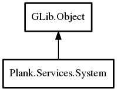

System
Object Hierarchy:

Description:
public class System : Object
A utility class for launching applications and opening files/URIs.
Content:
Static methods:
- public static void open_uri (string uri)
Opens a file based on a URI.
- public static void open (File file)
Opens a file based on a GLib.File.
- public static void open_files (File[] files)
Opens multiple files based on GLib.File
.
- public static void launch (File app)
Launches an application.
- public static void launch_with_files (File? app, File[] files)
Launches an application and opens files.
- public static bool is_desktop_session (string session)
Inherited Members:
All known members inherited from class GLib.Object
- @new
- newv
- new_valist
- get_type
- get_class
- @ref
- unref
- ref_sink
- weak_ref
- weak_unref
- add_weak_pointer
- remove_weak_pointer
- @get
- @set
- get_property
- set_property
- get_data
- set_data
- set_data_full
- steal_data
- get_qdata
- set_qdata
- set_qdata_full
- steal_qdata
- freeze_notify
- thaw_notify
- dispose
- constructed
- notify_property
- connect
- disconnect
- add_toggle_ref
- remove_toggle_ref
- bind_property
- notify
- ref_count